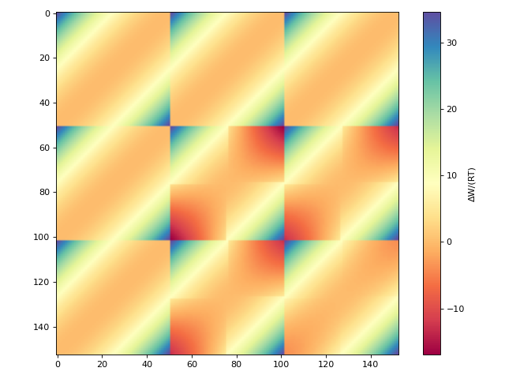

create_cosmo_sac_2010_matrices#
- cosmolayer.cosmosac.create_cosmo_sac_2010_matrices(temperature, *, min_sigma=-0.025, max_sigma=0.025, num_points=51, a_es=6525.69, b_es=148590000.0, c_oh_oh=4013.78, c_ot_ot=932.31, c_oh_ot=3016.43, gas_constant=0.0019872043011606513)[source]#
Create interaction matrices for the COSMO-SAC 2010 model [1].
Computes the electrostatic and hydrogen bonding parts of pairwise interaction energies between surface segments with given screening charge densities, ΔW(σ,σ’), divided by the product RT, where R is the universal gas constant and T is the temperature at which the interaction matrix is computed.
- Parameters:
temperature (float) – The temperature in Kelvin at which the interaction matrix is computed.
- Keyword Arguments:
min_sigma (float, optional) – Minimum screening charge density in e/Ų. Default is -0.025.
max_sigma (float, optional) – Maximum screening charge density in e/Ų. Default is 0.025.
num_points (int, optional) – Number of discrete points in the sigma grid. Default is 51.
a_es (float, optional) – Misfit energy constant in (kcal/mol)/(e/Ų)². Controls the strength of electrostatic misfit interactions. Default is 6525.69 [1].
b_es (float, optional) – Misfit energy constant in (kcal/mol)/(e/Ų)². Controls the strength of electrostatic misfit interactions. Default is 1.4859e8 [1].
c_oh_oh (float, optional) – Hydrogen bonding energy constant in (kcal/mol)/(e/Ų)². Controls the strength of hydrogen bonding interactions. Default is 4013.78 [1].
c_ot_ot (float, optional) – Hydrogen bonding energy constant in (kcal/mol)/(e/Ų)². Controls the strength of hydrogen bonding interactions. Default is 932.31 [1].
c_oh_ot (float, optional) – Hydrogen bonding energy constant in (kcal/mol)/(e/Ų)². Controls the strength of hydrogen bonding interactions. Default is 3016.43 [1].
gas_constant (float, optional) – Universal gas constant in kcal/(mol·K). Default is 0.0019872043011606513 [1]
- Returns:
Dimensionless interaction energy matrices ΔW(σ,σ’) / (RT). Shape: (num_points, num_points).
- Return type:
tuple[np.ndarray, np.ndarray]
Examples
>>> import numpy as np >>> from matplotlib import pyplot as plt >>> T = 298.15 # K >>> delta_w_a, delta_w_b = create_cosmo_sac_2010_matrices(T)
Plotting the interaction matrix:
>>> from cosmolayer.cosmosac import create_cosmo_sac_2010_matrices >>> from matplotlib import pyplot as plt >>> delta_w_a, delta_w_b = create_cosmo_sac_2010_matrices(298.15) >>> fig, ax = plt.subplots(figsize=(8, 6)) >>> im = ax.imshow(delta_w_a + delta_w_b, cmap="Spectral") >>> _ = fig.colorbar(im, ax=ax, label="ΔW/(RT)") >>> fig.tight_layout()
(
Source code,png,hires.png,pdf)
{kind=link}
{kind=link}